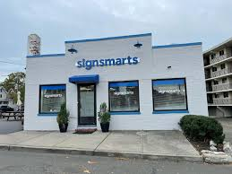

Experience
Van Dyk Recycling Solutions
After Sales Equipment Engineer Data Engineer - Summer 2024 to Summer 2025

Whether you’re designing a new system or looking for retrofit options to improve your operation, Van Dyk is committed to finding a solution that fits your needs and goals. As an After Sales Equipment Engineer Data Engineer, I applied software engineering with data analytics skills in order to provide industry standard data representation for project managers and services techs. Working alongside industry professionals I was able to learn relevant technical skills that will help me in my carrer
Sign Smarts Visual Communications
Visual Communications Specialist / Department Manager
Learned software programs and hardware to utilize graphic design and retail ability for quality work requested. Managed company financials, Assisted in maintaining inventory, organization, and processing orders/transactions
